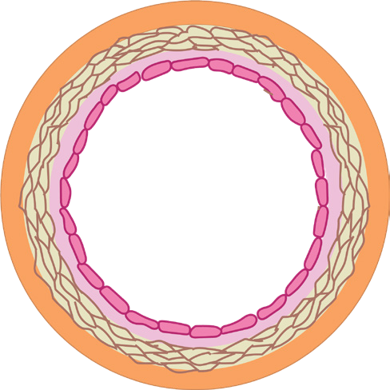
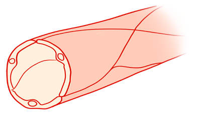

105
Student’s Book - Form Two

Biology for Secondary Schools
Veins
Veins are blood vessels that transport blood to the heart from all parts of the body. All veins transport deoxygenated blood, except the pulmonary vein. The pulmonary vein transports oxygenated blood from the lungs to the heart. Veins have a larger lumen and less muscular walls than arteries as shown in Figure
5.5. This is because the blood in the veins flows at low pressure.
Fibrous layer
Muscle fibre
Endothelium
Lumen

Basement membrane
Figure 5.5: Cross-section of a vein
Veins have valves at regular intervals.
These prevent the back flow of blood, as shown in Figure 5.6. The muscles next to the veins squeeze the veins, which force blood to flow towards the heart. The contraction and relaxation of the muscles of the ribs during breathing also help to squeeze some veins and keep blood flowing. Veins branch to form venules. Venules are small veins that connect capillaries and veins.
(a) An open valve
(b) A closed valve
Valve
Direction of blood flow
Direction of blood flow
Figure 5.6: Functioning of a valve
Capillaries
Capillaries are the smallest blood vessels. They connect the smallest branches
of
arteries
and
veins.
Capillaries also help to exchange molecules between the blood and the cells across their walls. They are one cell thick, narrow and have thin walls, as shown in Figure 5.7.
Endothelium
Lumen

Figure 5.7: Cross-section of a capillary
Capillaries are in direct contact with the tissues of the body. They form a network for the efficient diffusion of substances. Their thin walls maximise the rate of diffusion and enable oxygen and nutrients to diffuse from the blood to the cells. They also enable carbon dioxide and other waste products to diffuse from the cells into the blood.
08/04/2026 10:18:30